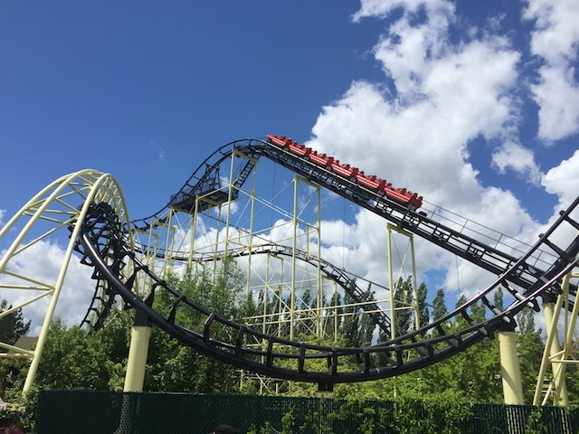
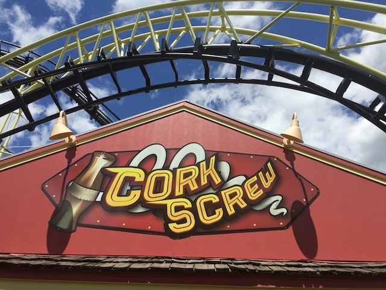

| |
Corkscrew Review

We're here at Silverwood. Today's ride we'll be reviewing for you is Corkscrew. Now a quick little history lesson for this ride as this is one of the most historically important roller coasters still running today. The ride originally opened up at Knotts Berry Farm back in 1975, and it was the first modern coaster to go upsidedown. Yes, there were all those deathtraps from the early 1910s, but those were poorly made, and could break your neck. So they stopped making inversions until Corkscrew opened up at Knotts Berry Farm. It was relocated to Silverwood in 1990, and still runs here to this day. So while there may be countless coasters with inversions, and many clones of this ride in operation today, this is the ride that changed roller coaster history. Once you get in the cars and pull down the OTSRs, you're off. After a small dip and turn, we begin to climb up the lifthill. You reach the top and go into the turnaround and down the drop. The drop isn't too bad. Just a typical Arrow Drop. Then you dip up and go through another turn. Still nothing special. Don't expect any laterals over here. Then you roll through two corkscrews. The corkscrews are all right. I mean, they're not any better than your typical ordinary corkscrews, but at least they don't hurt. So consider that to be good news. We then go through a big turn and into the brake run. I'm sorry, but I find the Arrow Corkscrews to be a boring ride simply because they don't do much. Just drop, turn, corkscrews, brakes. Vekoma has a MUCH better standard corkscrew model. I will admit that even excluding historical significance, this is the best of the Arrow Corkscrews because they're really maintaining it because...yeah. Historical value. But by todays standards, it's a kind of boring layout. But hey, roller coaster history is fun. At least give it a ride in tribute to roller coaster history.
6/10
Location: Silverwood
Opened at Knotts Berry Farm in 1975
Relocated to Silverwood in 1990
Built by: Arrow
Last Ridden: June 2, 2017
I have ridden this exact same ride at the following parks.
Canobie Lake Park
Michigan's Adventure
Nagashima Spaland
Toshimaen
Corkscrew Photos



Home
|